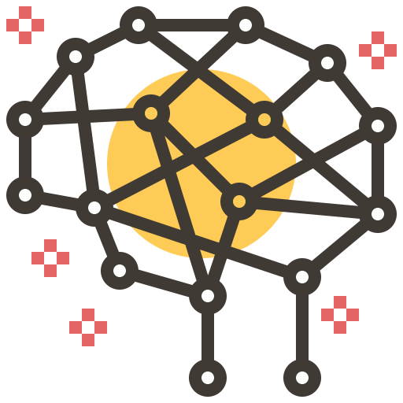

Conheça nossos serviços
O eixo do nosso trabalho é vencer alguns dos desafios das organizações: consolidar informações de diferentes fontes, medir resultados, fazer análises preditivas. Tudo isso em tempo hábil e de forma automatizada.
Business Inteligence
A Niteo estrutura, analisa e integra dados – de várias origens – para você acessar de forma ágil informações confiáveis, análises factuais e insights relevantes que complementam a intuição e a experiência das pessoas.
Business Inteligence (BI)
Oferecemos serviços e tecnologias de BI para sua empresa transformar dados em informações inteligentes, que potencializam a capacidade analítica das áreas operacionais. A Niteo tem experiência na modelagem de diversos segmentos do mercado: Indústria, Saúde, Finanças, Varejo, Telco, Call Center, entre outras. É mais diferencial competitivo para seu negócio!
Data Lake
Somos especializados na extração, na transformação e no carregamento de grandes volumes e variedades de dados para a nuvem. Facilitamos o consumo desses dados pelas áreas de negócio e criamos uma governança com as melhores práticas de segurança da informação. É mais eficiência para seu negócio!
Data Layer
Nosso know-how em modelagem de dados, seja qual for o volume e a origem, nos permitiu desenvolver uma metodologia própria de aplicação de camada semântica para transformar quaisquer dados em informações altamente relevantes. É mais capacidade analítica para seu negócio!
Power BI
Desenvolvemos dashboards avançados e novos elementos, desenhamos a governança do ambiente do Power BI e ministramos treinamento de Power BI para equipes. Já acumulamos casos de sucesso nas mais diversas áreas: Logística, Vendas, Marketing, Pricing, Industrial, Gestão… É mais inteligência para seu negócio!
Machine Learning
Os conceitos de Industria 4.0, 4ª Revolução Industrial e Transformação Digital vêm alterando a maneira como as empresas se relacionam e fazem negócios. Nesse cenário, a Niteo desenvolve algoritmos para apoiar as organizações na otimização dos processos e na criação de ambientes de simulação de análise preditiva para manutenção de equipamentos, simulação de eficiência energética, simulação de pricing e de forecast. É mais inovação e rentabilidade para seu negócio!
 WhatsApp
WhatsApp